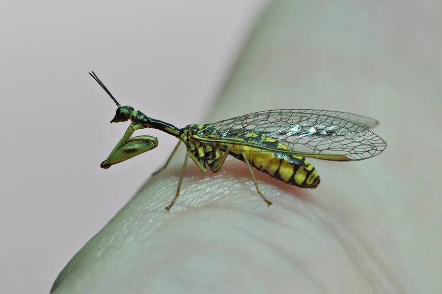

昆虫 · 动物界
螳蛉 Mantispa japonica

前足像螳螂、身体像脉翅目的昆虫，成虫以捕食小虫为生，生活史十分特别，幼虫寄生在蜘蛛的卵囊中。
- 分类
- 门节肢动物门纲昆虫纲目脉翅目科螳蛉科属螳蛉属
- 栖息环境
- 林缘、灌丛和草地，成虫活动于植物间
- 地理分布
- 东亚地区，中国多地有记录
- 保护级别
- 暂无评估
物种志
螳蛉成虫体长 15–20 mm，体色黄褐，前足特化成捕捉足，像螳螂一样折叠在胸前；翅透明，翅痣明显，停息时呈屋脊状盖在背上。它的身体属于脉翅目，却长着螳螂式的前足，是典型的“混搭”造型。
螳蛉分布于东亚，中国多地有记录，栖息于林缘、灌丛和草地。成虫捕食小型昆虫，捕捉足平时折叠收起，遇到猎物时迅速弹出。幼虫的生活史十分特别：初孵幼虫主动寻找蜘蛛卵囊，钻入其中取食蜘蛛卵，随后在卵囊内化蛹。这种寄生蜘蛛卵的习性在脉翅目中比较少见，也让螳蛉成为研究昆虫寄生行为的有趣对象。目前它没有IUCN 的正式评估，中国未将其列入国家重点保护野生动物名录。
形态与习性
- 食性成虫捕食小型昆虫，幼虫取食蜘蛛卵
- 体长15–20 mm
- 前足特化成螳螂式的捕捉足，折叠在胸前
- 幼虫寄生初孵幼虫钻进蜘蛛卵囊取食蜘蛛卵
- 栖息地林缘、灌丛和草地
- 化蛹幼虫在蜘蛛卵囊内化蛹
趣味知识
- 螳蛉的前足像螳螂的捕捉足，因此得名。
- 它的幼虫会钻进蜘蛛的卵囊里取食蜘蛛卵。
- 成虫身体像脉翅目昆虫，前足却像螳螂，是“拼装”出来的捕食者。